1. Development Guide
1.1. Prerequisite
To be able to develop Willy there are a few Prerequisites:
-
Integrated Development Environment
-
Basic knowledge about C++ and C
-
Basic knowledge about ROS
-
Basic knowledge about GIT
Integrated Development Environment
Visual Studio Code is a Integrated Development Environment. This program is used
to write code and use git to send the documents to Willy. Visual studio can be
extended with a lot of extensions. These extensions make it possible to align
the code and see if the syntax of your code is correct or incorrect.
Basic knowledge about GIT
GIT is used as file transfer and version manager of the current Willy project.
Everything starts with setting up the GIT repository and be able to push and pull
parts of code. That makes GIT essential in the Willy development.
A tutorial about GIT and the setup of GIT can be found here:
Basic knowledge about C++ and C
The Willy code is written in C++. To add features and understand the code, some basic
knowledge of C++ is required. If you want to learn the basics of C++? Follow a semester
programming or see the following tutorial
Basic knowledge about ROS
Because Willy is based on the Robot Operating System (ROS), a basic knowledge of ROS
is required to communicate with the different modulair parts of Willy. ROS learing
may be difficult, but you can follow the following tutorial to learn the basics:
1.2. Development
| To start development, make sure you complies to the requirements above. |
-
Make a folder on your local computer where you want the Willy project to take place.
-
Install git.
| Git can be downloaded from the following website: https://git-scm.com/downloads |
-
Clone the WTGD git repository.
This can be done with the following command:
git clone https://github.com/ArtOfRobotics/WTGD -
Checkout at the
testbranch.
This can be done with the following command:
git checkout test -
Open Visual Studio Code and open the cloned WTGD folder.
This can be done by following this steps:
File → Open Folder → Navigate to WTGD folder → Select Folder -
In the navigation window on the left, navigate to:
willy → src
| In this folder all the Willy ROS packages are listed. |
1.3. Compilation
To compile your changes you have made to the Willy project, a few steps are required.
-
Commit and push your changes to the GIT WTGD repository. This can be done using git bash or Visual Studio Code integrated source control.
-
Startup the computer of Willy, login using the default login credenticals and open a terminal window.
-
Enter the following command:
cd /home/willy/Documents/WTGD/willy -
Pull the git changes (There may be no changes because of the automatic git sync)
sudo git pull -
Build the package using catkin_make
catkin_make -
Make the terminal point to the source code of driving_willy
source devel/setup.bash -
Now you can launch the project as described in startup wiki page.
| For more information about starting up willy? See our startup guide: https://artofrobotics.github.io/WillyWiki/Startup/Driving-Willy.html |
1.4. Testing/Debugging
To test the new builded code, you need to launch the project you builded. Make sure you followed the steps above and leave the terminal open.
| Make sure to press the emergency button or the switch on the motor controller that makes the LED turn off. Otherwise the motors cannot start. |
To launch the willy_navigation package you can use the roslaunch command.
roslaunch willy_navigation willy_navigation.launch
| Do not forget to depress the emergency button or switch the lever on the motor controller after starting the project. Otherwise Willy will not drive. |
Step if Willy will not drive
Willy can sometimes be a little unreliable and stops driving. This can have multiple reasons. Here are some of them and the way to fix the problems:
-
Forgot to press the emergency button before starting up the project.
→ Use the commandpkill rosin a new terminal to stop ROS.
→ Follow the steps above or the startup guide to restart Willy. -
Forgot to depress the emergency button after starting the project.
→ Depress the emergency button and willy will start driving -
Forgot to set a goal to navigate to.
→ Use your mouse to send a new goal in Rviz. This button can be found in the top navigation bar in rviz. -
Rviz hangs on startup
→ Use the commandpkill rosin a new terminal to stop ROS.
→ Use the commandpkill rvizin a new terminal to stop Rviz.
→ Reboot the project as described in the startup guide. -
Mini pc will not power on.
→ Use the switch on the top of willy to power on Willy.
2. Findings
This file contains all the things we have found while prototyping and may be usefull to other project groups
2.1. Software
-
The motor controller is a device that is used to control the cmd_vel topic created by the ros navigation stack. The ros navigation stack published geometry::Twist messages
-
ROS is complicated and difficult to learn. But if everything is setup just right, ROS makes it really easy to communicate between your hardware.
-
If you want to create files to start multiple projects? Do not use bash files. ROS can’t handle bash files properly. use ros launch files instead.
-
The making of the DrivingController was a complex situation. That is because of the fact every ROS node has only one ROS nodehandler. To make it possible to subscribe and advertise everywhere in the DrivingWilly code, we must send the nodehandler to every subcontroller by using pointers. This request a detailed knowledge of C++ and ROS.
-
The setup of the ROS navigation stack is difficult because of the fact that every robot is different. A lot of components needs to be setup on your own. As example the move_base, the transformations and rotations and the cmd_vel topic.
2.2. Vision
-
When the kinect is used together with the LIDAR for indoor navigation, the kinect can not handle the fast scan frequency of the LIDAR which will cause the transform of the robot to become unknown. Then the robot will lost its orientation.
-
The kinect cannot look further than 10 meters away. Thats makes the kinect not usefull for indoor navigation.
2.3. Hardware
-
The current batteries should be powerfull enough to power the current Willy.
-
The 230 volt touchscreen in combination with the power converter is replaced by a 19v display.
-
The brakes are not easy to deploy. Thats because the levers on the side of willy are to loose to deploy the brake. We can’t tight them because the screw is malformed.
-
The GPS sensor and compass only work outside and are controlled using the GPSController.
-
The kinect cannot be used outside. The IR camera can’t handle the bright sunlight.
2.4. Design
-
The current battery shell will not fit because of the new motorcontroller. Therefore we created a set of new brackets to mount the 6 batteries onto the chassis.
2.5. Social interaction
-
There are a lot of ways to communicate with Willy. The ones we’re using are:
→ Leap
→ kinect
→ Voice recognition
→ TTS (Text to Speech)
→ Lights (Led and sirene)
→ Keyboard
→ Mouse -
Offline speech recognition is limited. There are a few solutions for hot-word detection like Snowboy.
3. Hardware
3.1. Overview
A simple overview of all the hardware in Willy is made in the following scheme:
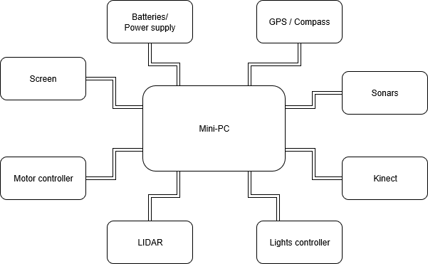
3.2. Components
This chapter contains all the components with explanation.
3.2.1. Mini pc
This is the dedicated PC for running the ROS Server. Al the calculational work will be done on this PC. Therefore, we chose for a PC with some calculation power as well as enough RAM.
| Product | Dell Optiplex 3020 Micro (3020-9806) |
|---|---|
CPU |
Intel Core I5 4670T quad-core |
Video Chip |
Intel HD Graphics 4600 |
RAM |
16 GB DDR3L Sodimm |
Harddisk |
Western Digital Black 500GB 2,5" HDD |
Amount of USB Ports |
|
Other Ports |
|
Wireless Connection options |
WLAN chip |
3.2.2. Motors and controller
Willy contains 2 motors from a second-hand mobility scooter. A previous project group has chosen this option as documented in the Ontwerp verslag. (Ontwerpverslag, 2016)
These motors need 24 volts and use a max of 20 amps. One of the previous project groups created the motor controller to control the motors. This is documented in the Systeem dossier from a previous project group. (Systeem Dossier, 2016)

This motor controller is made by using an Arduino Mega and a custom shield with additional custom hardware. The controller recieves data from ROS and sends it to an internal controller. This is part of the wheelchair and is named Penny and Giles Pilot Plus.
The motor controller is built as shown below:

| As can be seen in the image above, there are still cables for the odometry sensors. These are however not used anymore. This has two reasons. The first one is the fact that since using the lidar, the positioning is so accurate, that the wheel encoders are not neccesary anymore. The second reason is that both the sensors don’t function anymore. |
The 3 cables to the internal motor controller (built in in the wheelchair frame) are connected to the original cable with a simple circuit. The pinout of the connector attached to the cable is as follows:

| Pin number | Description | Internal Cable Color |
|---|---|---|
1 |
+ 24V |
Red |
2 |
- 0V |
Black |
3 |
Driving data |
White |
4 |
Unknown (not used) |
Yellow |
5 |
Enable |
Blue |
6 |
Actuator Data (not used) |
Green |
The drive data pin (3) is used to send driving commands to the internal controller. The yellow cable is not used and the function is unknown. The enable pin is connected to the emergency button and the switch on the motor controller. The motors only work when the voltage level on this cable is 5 volts. The actuator pin is not used in this project. In the original wheelchair this pin is used for the lighting etc.
| The motor controller also contains a connection for charging the batteries. The connector at the side of the box is connected to the + and - of the cable to the internal motor controller. |
Brakes
The two engines of willy contain both a brake. This brake is controlled by the engine itself. When the active signal to the motors is lost, the motor will automatically activate the brake. To start the driving_willy project, you NEED to deploy the brakes. Otherwise Willy will not drive!


Make sure to deploy the brakes. Otherwise Willy wont work!! There is only one way to detect if the brakes are deployed. Its by simply testing if the wheel can’t turn (Or a very little bit) anymore.
| The wheels should not be able to turn for Willy to function normally. The brakes will automatically be released by Willy when driving. |
3.2.3. Batteries
Old situation
In the old situation Willy contained 2 12V batteries connected in serial, adding up to 24V. Both batteries are 52Ah.


New situation
In the new situation the 2 batteries are replaced with 6 new 12V batteries. All the batteries are 33Ah. They are connected placing 2 batteries in serial 3 times in parallel. This adds again up to 24V.
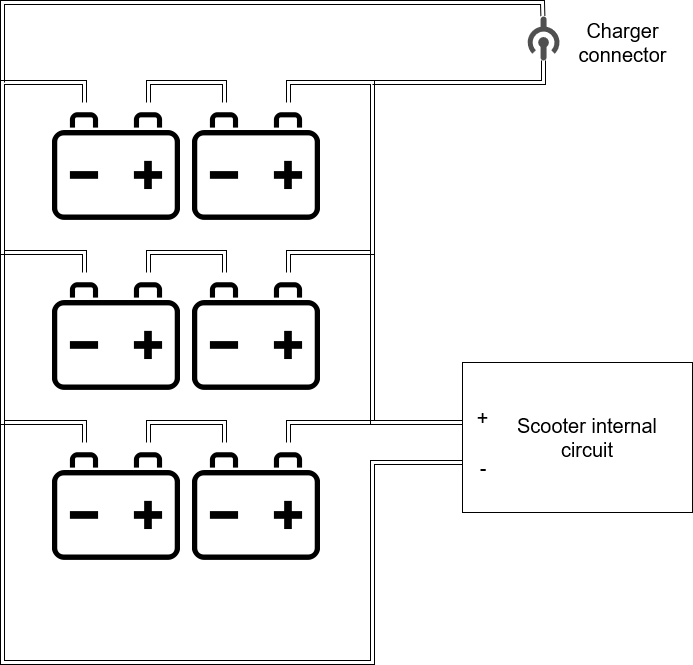

3.2.4. Power Supply
The 19 volts for the screen is provided by a step-down converter. The module is based on the Xl4015 buch DC to DC converter. The input voltage range is 8-36V and the adjustable output range is 1.25V to 32V. The converter is rated for a max current of 5 amps.
The mini pc is connected to a small 19.5V DC step-down converter. This is needed because the screen needs the full amperage of the other 19.5 step-down converter. The mini pc use 65 Watt and the step-down converter can provide a maximum of 75 watt.
The power for the step-down converters is provided by the batteries. Between the batteries and the step-down converter, there is a fuse placed. The fuse called T5L250V is rated for 250V with 5A. Then a switch is used to turn Willy on or off. To split the 24v of the batteries to all the step-down converters, there is a homemade pcb plate created. This board is placed at the left of the step-down converters.
3.2.5. Sonars
| The sonars are currently not connected, because the frame bumpers are not yet made. These sensors have to be placed in this metal piece. |
To prevent collisions, ultrasonic sensors are used. These sensors measure distance by using sound. This is made possible by sending out bursts of high frequency noise, and then waiting for a reflection of that sound using the HC-SR04 ultrasonic sensor.

By using this data Willy is be able to decide if he is able to drive any further in a certain direction. In the event of Willy being not able to drive any further, he will decide if there is a direction where he is able to drive further. This way Willy will be able to drive around autonomously without collisions. How Willy reacts to objects in his navigation is researched by a previous group. (Navigation design v0.1, 2017)
The datasheet [1] for the HC-SR04 is included in the sources at the bottom of this document.
The sensors all use 5V as can be seen in the schematic:
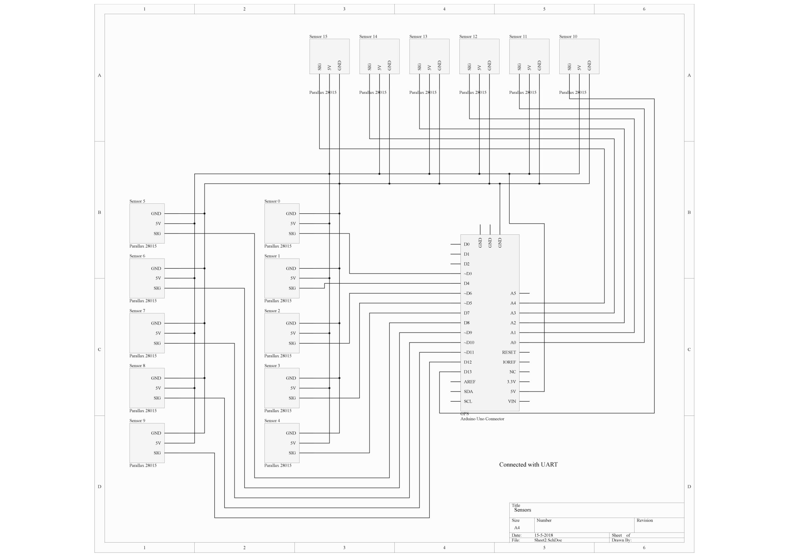
As shown in the schematic above, all the 16 sensors are connected to the Arduino.
| The new sensors don’t have a 'sig' pin, but two seperate pins called 'trig' and 'echo'. However, these two pins are connected to each other, so both pins use the same pin on the Arduino. The code has been adapted to this new situation. |
The sensors are connected in the following order:
| Arduino Digital Pin Number | Sonar Sensor Number |
|---|---|
3 |
Sensor 0 |
4 |
Sensor 1 |
5 |
Sensor 2 |
6 |
Sensor 3 |
7 |
Sensor 4 |
8 |
Sensor 5 |
9 |
Sensor 6 |
10 |
Sensor 7 |
11 |
Sensor 8 |
12 |
Sensor 9 |
13 |
Sensor 10 |
A0 |
Sensor 11 |
A1 |
Sensor 12 |
A2 |
Sensor 13 |
A3 |
Sensor 14 |
A4 |
Sensor 15 |
The sensors are placed as follows:
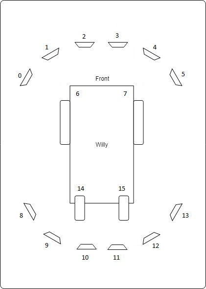
It should be noted that not all the sensor are read at the same time. All odd numbered sensors are read first, and after a small delay the even numbered sensors are read. This is because sensors placed next to each other can interfere the readings of each other.
3.2.6. GPS / Compass
| The GPS and compass are currently implemented but not used in the code on the mini-pc. |
To allow Willy to drive outdoor by using a precomputed route, a GPS sensor and a compass are required. The GPS sensor is linked to the GPSController using ROS. In the GPSController the raw data is processed to usable coordinates. These coordinates are only used to draw a line where Willy has driven in the code of the previous group. The Compass is used to determinate the direction of willy. This is needed for navigation when willy is going to drive precomputed routes.
The sensors are connected according to the following scheme:
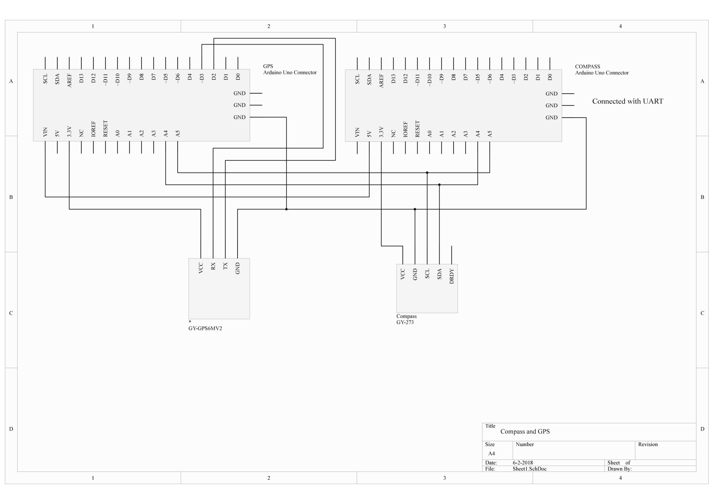
As can be seen in the scheme, there are two Arduinos used to measure sensor data. Both Arduinos are connected with I2C (see pins A4 and A5). The second Arduino with the GPS sensor is powered with the 5V pin from the first Arduino. At the moment of writing this has not been fixed and reduced to one Arduino.
The GPS will not send data until a FIX has been established. When the reciever is indoors, this can take a long time. GPS works best when outside.
3.2.7. Screen
The screen used is a KDL-42W815B [2] from Sony. The screen is connected to the mini-pc with a VGA cable. The manual can be found at the bottom of this document.
| The current screen is a replacement for the old screen. This screen was very heavy and energy consuming. |
3.2.8. LIDAR
The previous group has also done research on a Lidar sensor. Unfortunately the previous documentation stated that it was not possible to link a Lidar to ROS. Also other methods where somehow researched by a previous group but not in the form of a Lidar. (Research localization system v1.1, 2017)
A LIDAR sensor uses a laser to measure distance. With these measurements the sensor makes a map of all the objects in the environment.

The previous group has done some research concerning LIDAR and the link to ROS. But came to the conclusion that it is not possible to create a link between LIDAR and ROS. Therefore they decided to not implement the LIDAR sensor.
After doing some research we found that it is possible and supported to link ROS to a LIDAR sensor.
At this stage we use the LIDAR to navigate with Willy. The sensor is placed at the front of the robot.
The LIDAR is connected with an ethernet connection via a router to the pc.
3.2.9. Kinect

As a method to navigate inside, initially the Kinect was chosen. This is not true anymore. The Kinect is now used to detect if there is a person in front of Willy. A Kinect can create a framework of a person and see all movements of that person. By adding a Kinect to willy, willy will be able to recognize people and interact with them by using the speech recognition of the Kinect.
There are two versions of the Microsoft Kinect: Kinect 1 for Xbox 360 and Kinect 2 for Xbox one. See table 1 which list all the different features of both versions.
| Feature | Kinect 1 | Kinect 2 |
|---|---|---|
Color Camera |
640 x 480 @30 fps |
1920 x 1080 @30 fps |
Depth Camera |
320 x 240 |
512 x 424 |
Max Depth Distance |
apr. 4.5 m |
8 m |
Min Depth Distance |
40 cm in near mode |
50 cm |
Depth Horizontal Field of View |
57 degrees |
70 degrees |
Depth Vertical Field of View |
43 degrees |
60 degrees |
Tilt Motor |
Yes |
no |
Skeleton Joints Defined |
20 joints |
25 joints |
Full Skeletons Tracked |
2 |
6 |
USB Standard |
2.0 |
3.0 |
The main difference which is most important for us is the Field of View (FoV). The bigger the FoV, the more Willy can see in front of him. The Kinect 2 can also recognize more people and can see further away, which are both nice features to have when the social aspect of Willy will be implemented in the future. This makes the Kinect 2 more futureproof than its precursor. (Kinect 1 vs 2 specifications: , sd) (Kinect 1 specifications, sd) (Main factors/features of most industrial computer vision hardware., sd)
The Kinect used in Willy is a version 1 Kinect, the old one.
References
-
[[[1]]] HCSR04 Datasheet version 1. Retrieved from https://www.electroschematics.com/wp-content/uploads/2013/07/HCSR04-datasheet-version-1.pdf
-
[[[2]]] Sony KDL42w815 Manual. Retrieved from https://www.sony.nl/electronics/support/res/manuals/4489/44895371M.pdf
4. Common problems
This file contains a list of the most common problems and the problems we found during development.
4.1. Driving
-
It is quite hard to deploy and undeploy the brakes.
-
When the battery voltage drows below a certain level, Willy will stop driving at irregular intervals. This is probably an internal security system. The brakes are also deployed causing an abrupt stop.
-
When driving manually, Willy uses characters pressed on the keyboard to move. When a lot of characters are pressed in a short time, Willy will try to process the complete list of characters, seeming to be uncontrollable.
-
Willy has difficulty driving through doors when driving autonomously. This is caused by Willy being quite wide and limitations in the software for autonomous driving.
-
The ultrasonic sensors have a lot of blind spots. Since the LIDAR can’t scan the back of Willy, the ultrasonic sensors are the only sensors controlling the back of Willy. When Willy is driving backwards, this can cause problems.
4.2. Design
-
Because of the width of Willy with garbage bins attached to the side, it is impossible to go through a door without detaching the bins, including the detachable buffers with ultrasonic sensors in it.
4.3. Web Interface
-
There are no known bugs at this moment.
| The Web Interface is still in development. |
5. Launch file parameters
5.1. Overview
The autonomous driving of Willy is controlled by external ROS plugins. These plugins are:
Move_base → Used for sending Twist messages to Willy out of goals send to the ros navigation stack.
Hector_Mapping → Used for creating a map based on the LiDaR and transforms.
Sick_tim551 → Used for initilization of the LiDaR and creating the /scan topic for the map.
Transform → Used the send the transformation and rotations from devices on the robot to the rotation point of the robot.
Kinect → Used for the recognition of people and creating the /camera topic.
Rviz → Used for visualization of the map and sensors on the base frame.
All of these plugins have their own launch file. Every launch file has it’s own parameters which can be tuned to finetune Willy.
5.2. parameters
Move base
Move_base_param.yaml
This param file can be found in the following directory: /home/willy/WTGD/willy/src/willy_navigation/param/move_base_params.yaml
It’s possible that some parameters are not used yet. These can be added when needed.
-
base_global_planner(string, default: "navfn/NavfnROS")
The name of the plugin for the global planner to use with move_base. -
base_local_planner(string, default: "base_local_planner/TrajectoryPlannerROS")
The name of the plugin for the local planner to use with move_base. -
recovery_behaviors(list, default: [{name: conservative_reset, type: clear_costmap_recovery/ClearCostmapRecovery}, {name: rotate_recovery, type: rotate_recovery/RotateRecovery}, {name: aggressive_reset, type: clear_costmap_recovery/ClearCostmapRecovery}])
A list of recovery behavior plugins to use with move_base, see pluginlib documentation for more details on plugins. These behaviors will be run when move_base fails to find a valid plan in the order that they are specified. After each behavior completes, move_base will attempt to make a plan. If planning is successful, move_base will continue normal operation. Otherwise, the next recovery behavior in the list will be executed. -
controller_frequency(double, default: 20.0)
The rate in Hz at which to run the control loop and send velocity commands to the base. -
planner_patience(double, default: 5.0)
How long the planner will wait in seconds in an attempt to find a valid plan before space-clearing operations are performed. -
controller_patience(double, default: 15.0)
How long the controller will wait in seconds without receiving a valid control before space-clearing operations are performed. -
conservative_reset_dist(double, default: 3.0)
The distance away from the robot in meters at which obstacles will be cleared from the costmap when attempting to clear space in the map. Note, this parameter is only used when the default recovery behaviors are used for move_base. -
recovery_behavior_enabled(bool, default: true)
Whether or not to enable the move_base recovery behaviors to attempt to clear out space. -
clearing_rotation_allowed(bool, default: true)
Determines whether or not the robot will attempt an in-place rotation when attempting to clear out space. Note: This parameter is only used when the default recovery behaviors are in use, meaning the user has not set the recovery_behaviors parameter to anything custom. -
shutdown_costmaps(bool, default: false)
Determines whether or not to shutdown the costmaps of the node when move_base is in an inactive state. -
oscillation_timeout(double, default: 0.0)
How long in seconds to allow for oscillation before executing recovery behaviors. A value of 0.0 corresponds to an infinite timeout. -
oscillation_distance(double, default: 0.5)
How far in meters the robot must move to be considered not to be oscillating. Moving this far resets the timer counting up to theoscillation_timeout -
planner_frequency(double, default: 0.0)
The rate in Hz at which to run the global planning loop. If the frequency is set to 0.0, the global planner will only run when a new goal is received or the local planner reports that its path is blocked. -
max_planning_retries(int32_t, default: -1)
How many times to allow for planning retries before executing recovery behaviors. A value of -1.0 corresponds to an infinite retries.
5.3. Base local planner
base_local_planner_params.yaml
This param file can be found in the following directory: /home/willy/WTGD/willy/src/willy_navigation/param/base_local_planner_params.yaml
It’s possible that some parameters are not used yet. These can be added when needed.
--Robot configuration parameters--
- acc_lim_x (double, default: 2.5)
The x acceleration limit of the robot in meters/sec^2
- acc_lim_y (double, default: 2.5)
The y acceleration limit of the robot in meters/sec^2
- acc_lim_theta (double, default: 3.2)
The rotational acceleration limit of the robot in radians/sec^2
- max_vel_x (double, default: 0.5)
The maximum forward velocity allowed for the base in meters/sec
- min_vel_x (double, default: 0.1)
The minimum forward velocity allowed for the base in meters/sec.
- max_vel_theta (double, default: 1.0)
The maximum rotational velocity allowed for the base in radians/sec
- min_vel_theta (double, default: -1.0)
The minimum rotational velocity allowed for the base in radians/sec
- min_in_place_vel_theta (double, default: 0.4)
The minimum rotational velocity allowed for the base while performing in-place rotations in radians/sec
- escape_vel (double, default: -0.1)
Speed used for driving during escapes in meters/sec.
- holonomic_robot (bool, default: true)
Determines whether velocity commands are generated for a holonomic or non-holonomic robot. For holonomic robots, strafing velocity commands may be issued to the base. For non-holonomic robots, no strafing velocity commands will be issued.
The following parameter is only used if holonomic_robot is set to true:
- y_vels (list, default: [-0.3, -0.1, 0.1, 0.3])
The strafing velocities that a holonomic robot will consider in meters/sec.
--Goal Tolerance Parameters--
- yaw_goal_tolerance (double, defaultv: 0.05)
The tolerance in radians for the controller in yaw/rotation when achieving its goal.
- xy_goal_tolerance (double, default: 0.10)
The tolerance in meters for the controller in the x & y distance when achieving a goal.
- latch_xy_goal_tolerance (bool, default: false)
If goal tolerance is latched, if the robot ever reaches the goal xy location it will simply rotate in place, even if it ends up outside the goal tolerance while it is doing so.
--Forward Simulation Parameters--
- sim_time (double, default: 1.0)
The amount of time to forward-simulate trajectories in seconds
- sim_granularity (double, default: 0.025)
The step size, in meters, to take between points on a given trajectory
- angular_sim_granularity (double, default: sim_granularity)
The step size, in radians, to take between angular samples on a given trajectory.
- vx_samples (integer, default: 3)
The number of samples to use when exploring the x velocity space
- vtheta_samples (integer, default: 20)
The number of samples to use when exploring the theta velocity space
- controller_frequency (double, default: 20.0)
The frequency at which this controller will be called in Hz.
--Trajectory Scoring Parameters--
The cost function used to score each trajectory is in the following form:
cost =
pdist_scale * (distance to path from the endpoint of the trajectory in map cells or meters depending on the meter_scoring parameter)
+ gdist_scale * (distance to local goal from the endpoint of the trajectory in map cells or meters depending on the meter_scoring parameter)
+ occdist_scale * (maximum obstacle cost along the trajectory in obstacle cost (0-254))
-
meter_scoring(bool, default: false)
Whether the gdist_scale and pdist_scale parameters should assume that goal_distance and path_distance are expressed in units of meters or cells. Cells are assumed by default. -
pdist_scale(double, default: 0.6)
The weighting for how much the controller should stay close to the path it was given, maximal possible value is 5.0. -
gdist_scale(double, default: 0.8)
The weighting for how much the controller should attempt to reach its local goal, also controls speed, maximal possible value is 5.0. -
occdist_scale(double, default: 0.01)
The weighting for how much the controller should attempt to avoid obstacles. -
heading_lookahead(double, default: 0.325)
How far to look ahead in meters when scoring different in-place-rotation trajectories. -
heading_scoring(bool, default: false)
Whether to score based on the robot’s heading to the path or its distance from the path. -
heading_scoring_timestep(double, default: 0.8)
How far to look ahead in time in seconds along the simulated trajectory when using heading scoring. -
dwa(bool, default: true)
Whether to use the Dynamic Window Approach (DWA)_ or whether to use Trajectory Rollout. -
publish_cost_grid_pc(bool, default: false)
Whether or not to publish the cost grid that the planner will use when planning. When true, a sensor_msgs/PointCloud2 will be available on thecost_cloud*topic.
Each point cloud represents the cost grid and has a field for each individual scoring function component as well as the overall cost for each cell, taking the scoring parameters into account. -
global_frame_id(string, default: odom)
The frame to set for the cost_cloud. Should be set to the same frame as the local costmap’s global frame.
--Oscillation Prevention Parameters--
- oscillation_reset_dist (double, default: 0.05)
How far the robot must travel in meters before oscillation flags are reset
--Global Plan Parameters--
- prune_plan* (bool, default: true)
Defines whether or not to eat up the plan as the robot moves along the path.
5.4. Common costmap
costmap_common_params.yaml
This param file can be found in the following directory: /home/willy/WTGD/willy/src/willy_navigation/param/costmap_common_params.yaml
It’s possible that some parameters are not used yet. These can be added when needed.
-
max_obstacle_height(double, default: 1.0)
The max obstacle height the robot can handle in meters. -
obstacle_range(double, default: 2.5)
the maximum range sensor reading that will result in an obstacle being put into the costmap. -
raytrace_range(double, default: 3.0)
determines the range to which we will raytrace freespace given a sensor reading. -
robot_radius(double, default: 0.8) -
footprint(double array, default: [[0.3, 0.3], [0.3, -0.3], [-1.0, -0.3], [-1.0, 0.3]])
Here we set either the footprint of the robot or the radius of the robot if it is circular. -
cost_scaling_factor(double, default: 2.58)
A scaling factor to apply to cost values during inflation. -
inflation_radius(double, default: 1.75)
The radius in meters to which the map inflates obstacle cost values. -
observation_sources(string, default: scan kinect) The sensor sensors used for the navigation. Listed below.
scan: {data_type: LaserScan, topic: scan, marking: true, clearing: true, min_obstacle_height: -1, max_obstacle_height: 1.0}
kinect: {data_type: PointCloud2, topic: camera/depth_registered/cloud, marking: true, clearing: false, min_obstacle_height: -1, max_obstacle_height: 1}
5.5. Global costmap
global_costmap_params.yaml
This param file can be found in the following directory: /home/willy/WTGD/willy/src/willy_navigation/param/global_costmap_params.yaml
It’s possible that some parameters are not used yet. These can be added when needed.
-
global_frame(string, default: /map)
The topic where the map is published. -
robot_base_frame(string, default: /base_link)
The topic where the robot base frame is published and transformed. -
update_frequency(double, default: 1.0)
Determines the frequency, in Hz, at which the costmap will run its update loop -
static_map(bool, default: false)
Determines whether or not the costmap should initialize itself based on a map served by the map_server.
5.6. Local costmap
local_costmap_params.yaml
This param file can be found in the following directory: /home/willy/WTGD/willy/src/willy_navigation/param/local_costmap_params.yaml
It’s possible that some parameters are not used yet. These can be added when needed.
-
global_frame(string, default: /odom)
The topic where the map is published. -
robot_base_frame(string, default: /base_link)
The topic where the robot base frame is published and transformed. -
update_frequency(double, default: 5.0)
Determines the frequency, in Hz, at which the costmap will run its update loop -
publish_frequency(double, default: 2.0)
Determines the rate, in Hz, at which the costmap will publish visualization information. -
static_map(bool, default: false)
Determines whether or not the costmap should initialize itself based on a map served by the map_server. -
rolling_window(bool, default: true)
Setting the "rolling_window" parameter to true means that the costmap will remain centered around the robot as the robot moves through the world. -
width(double, default: 6.0)
The width in meters of the costmap. -
height(double, default: 6.0)
The height in meters of the costmap. -
resolution(double, default: 0.05)
The resolution in meters / cell of the costmap.
6. Software
6.1. Arduino’s
This chapter contains a overview of the code on the different Arduino’s in Willy.
The following definition list is to clear up confusion about certain terms used in this chapter.
| Term | Definition |
|---|---|
Code conventions |
These are rules that are used for programming and drawn up by the developers of Wake 'Em. |
UpperCamelCase |
This means that each word is capitalized. Example: SetAlarmOfAndroid. |
LowerCamelCase |
This means that each word is capitalized except for the first word. Example: setAlarmOfAndroid. |
Odometry |
The technique of measuring the amount of movement of the wheels with special sensors. |
ROS |
Robot Operating System, the framework Willy has been built on. |
6.1.1. System Overview
The following schematic shows an overview of how the Arduino’s communicate with ROS.
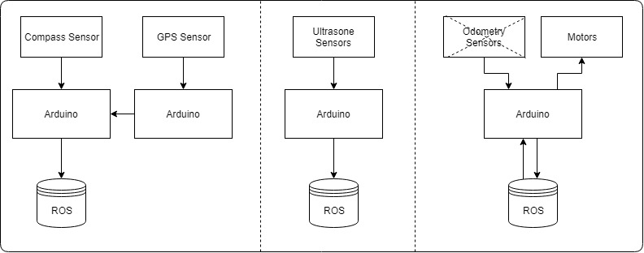 ros_gps gps sonar odometry
| It should be stated that the code for the odometry is currently removed. The reason for this can be found in the Technical Hardware document. |
Code Overview
In this chapter the structure of the C code on the Arduino’s can be found. These schemes are not class diagrams, since C is not object-oriented.

This is the code of the file in ros_gps. It is running on the Arduino connected to ros. The compass sensor is attached to this Arduino.

This code reads out the GPS sensor and sends it with a serial connection to the other Arduino (the one running ros_gps).

This is the code running the ultrasonic sensors. All the sensors have a digital pin.

This is the code of the motor controller. It is called 'Odometry', but this part is removed from the code. The code receives data from ROS and controls the motors of the wheelchair by sending serial data to the built in wheelchair controller.
6.1.2. Design Decisions
In the past the decision has been made to make the hardware modular. Unfortunately the reason behind this decision is not documented.
The motor controller (odometry) is made by the group of the second semester of 2016/17. The odometry code subscribes from the topic /cmd_vel. The code writes data it gets from ROS to the motors.
The sonar code was reading the 10 sonar sensors and publishes it to ROS on the topic sonar. The code has been written by the group of the second semester of 2016/17.
We updated the code so it uses 16 sensors, 6 for the front, 6 for the back, and 4 for facing down to the ground to detect if Willy is driving above a stair.
The GPS and compass code is written by the group of the first semester of 2017/18. The setup is made ambiguous. The compass has a Arduino and the GPS has a Arduino. The data from the GPS is sent to the Arduino with the compass. From that Arduino the data from the Compass and the data from the GPS is both being published to two separate ROS topics. The topic with compass data is compass and the topic with GPS data is gps. This setup has not been fixed yet.
6.2. Software
Here goes information about the code of the DrivingWilly ROS package
6.2.1. Overview

Our driving willy code consists of modulair components named controllers. These controllers controls the functionality of willy. Every piece of hardware has it’s own controller which controls the methods and stores the variables. A global class diagram can be found in the image above.
By using this way of coding, functionality of willy can be easily extended. Just create a new controller and add your methods to it. A detailed explaination of this can be found in the "Extending functionality" paragraph on this page below.
6.2.2. Controller setup
Every controller is created and declared in the main. The main creates the class object and returns a pointer to it.
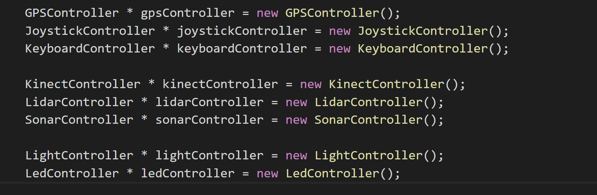
This pointer is forwarded to the controller of willy named "DrivingController".
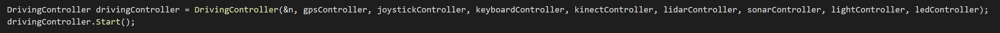
In this class the subcontrollers are declared. The current subcontrollers of willy are:
-
VisionController
-
GeneralController
-
VisionController
The pointers of the controllers are forwarded to the subcontrollers above in the "DrivingController"
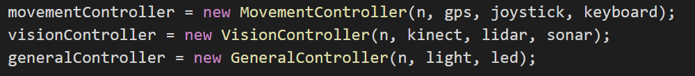
Now every controller has acces to their subscontroller and the subcontroller has acces to the main where the other controllers are declared. By using this method we can always access all data and methods of the controllers and subcontrollers. To make that possible, we have to send class object pointers between functions. Thats done by using the "static_cast" in C++

Above is an example of the "static_cast" in the "MovementController"
The "static_cast" make it possible to convert a void pointer back into a class object pointer without declaring the class again.
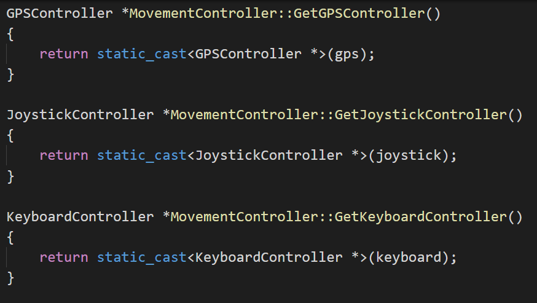
6.2.3. ROS setup
To make the communication between nodes easy accessibly, we created some advertisers and subscribers in the ROS cloud.


| To see the basics of ROS and the general purpose, please visit our ROS generic wiki page on: //LINK TO ROS GENERAL page |
These publishers and advertisers make it possible to push data generated by hardware to a rostopic, as example the sonar topic, and read that data all over the code of willy. Because you can echo the rostopic data anywhere and anytime.
Using ROS we’re able to push keyboard characters on the 'keyboard' topic and subscribe on the keyboard topic. This means that when the code is running and you pressed a key, the function that you gave to the keyboard subscriber will be launched. In our code this means that the led lighting will turn red if you press the 'r' button on the keyboard. The flowchart is shown on this page below.
Always running (DrivingController) MovementController → GetKeyboardController() → ReadCharacter()

Running when char received subLed() → LedCallback() → Advertise ColorRGBA on 'led' topic()

| The following paragraph is about the ros navigation stack. To learn the basics about ros_navigation, see our ros navigation wiki page. |
6.2.4. autonomous driving
The autonomous driving of Willy is controlled by external ROS plugins. These plugins are:
Move_base → Used for sending Twist messages to Willy out of goals send to the ros navigation stack.
Hector_Mapping → Used for creating a map based on the LiDaR and transforms.
Sick_tim551 → Used for initilization of the LiDaR and creating the /scan topic for the map.
Transform → Used the send the transformation and rotations from devices on the robot to the rotation point of the robot.
Kinect → Used for the recognition of people and creating the /camera topic.
Rviz → Used for visualization of the map and sensors on the base frame.
All of these external plugin are started using the 'willy_navigation.launch'.
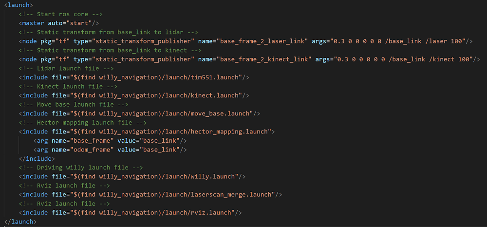
This file starts all of the external plugin launch files. All of these external launch files can be find in our git repository.
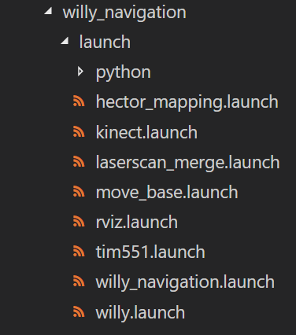
| To learn more about the parameters in the launch files. See our 'parameter' wiki page. |